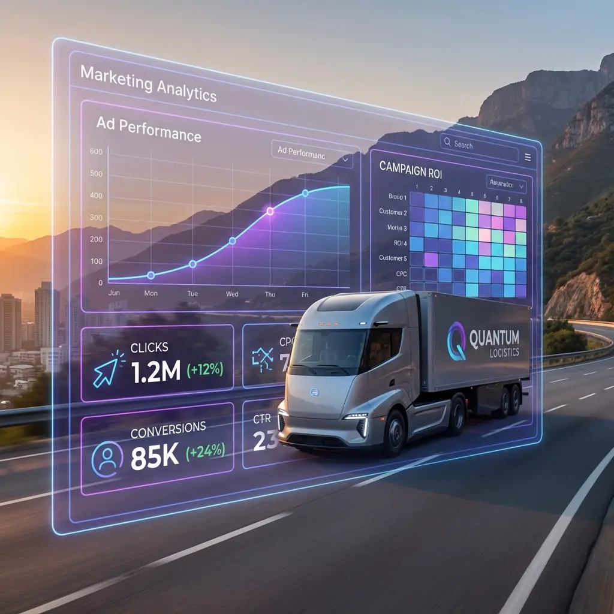

Services blur together
Warehousing, forwarding, transport, fulfillment, and tech solve different problems. Each needs its own proof.
We help logistics firms get more good leads. We join clear offers, useful content, ads, web pages, and sales feedback.

One campaign cannot explain every service or buyer.
Growth slows when a firm puts very different offers into one vague message. It also slows when each channel uses a different idea of a good lead.
Warehousing, forwarding, transport, fulfillment, and tech solve different problems. Each needs its own proof.
Some teams are learning. Some compare firms. A few are ready to ask for a price or an RFP.
Search, ads, content, events, and outreach waste time when they aim at different markets or use different messages.
Traffic and form fills do not show lead quality. Sales feedback does.
We help a buyer from first search to a sales talk. Then we use what sales learns to improve the work.
Focus on the services, places, and buyer groups that matter most.
Show the problem you solve, why you are different, and proof that you can do the job.
Use search, ads, content, and web pages that make the next step clear.
Use service details, comparisons, stories, and follow-up to help a buyer move ahead.
Track good leads, deals, wins, losses, and sales value.
Reach buyers who match your services.
We build the work around your logistics business, your goals, and the people you want to reach. That starts with services, target accounts, outreach, and sales follow-up.
Each step helps turn interest into a useful sales conversation.
The plan depends on your services, buyers, proof, and sales process. Each logistics business needs a plan that fits.
Demand paths emphasize facility locations, capacity, services, integrations, certifications, onboarding, and order-profile fit.
Programs organize air, ocean, customs, project cargo, gateways, trade lanes, documentation, and handling expertise.
Buyers need clear modes, equipment, terminals, lanes, safety, tracking, service levels, and operating coverage.
Growth content connects workflows, integrations, implementation, security, change management, and value by customer type.
Different assets and calls to action support different levels of readiness. The objective is to help a good-fit account progress without forcing every visitor into the same form.
Useful articles and clear service pages help buyers understand their needs and find your business.
Service, industry, location, solution, and comparison pages help teams find plausible providers.
Case evidence, implementation detail, certifications, integrations, process, and operating proof reduce perceived risk.
Quote, assessment, demo, and consultation paths collect the context needed for a useful commercial conversation.
Marketing should help create and grow sales opportunities that fit your business.
See which services, industries, messages, and assets attract engaged accounts and relevant buying roles.
Connect first touch, conversion, lifecycle stage, and campaign influence to qualified opportunities.
Use sales velocity, progression, wins, losses, revenue, and fit feedback to adjust the next investment.
Scope reflects your services, markets, current assets, sales cycle, systems, internal team, and the marketing channels needed.
Lead generation focuses on finding contacts. Demand generation also helps those contacts learn about you, build trust, and become customers.
It depends on demand, how quickly buyers need help, and your sales team’s capacity. We start with a focused mix of channels and test what works.
Yes, but each service needs a clear audience, operating problem, proof set, and conversion path. We usually establish one priority market before expanding the system.
Yes. We use lead stages, routing, and sales feedback to see whether marketing creates useful opportunities.
No. This page describes a broader, multi-channel B2B demand program for logistics providers. Freight brokerages seeking managed prospecting can use our freight broker lead generation service.
Book a discovery call to talk through your logistics services and the customers you want to reach, and where we can help.
Let’s talk about your lead generation.
Schedule a Discovery CallNo pressure. Just a helpful talk about your business.